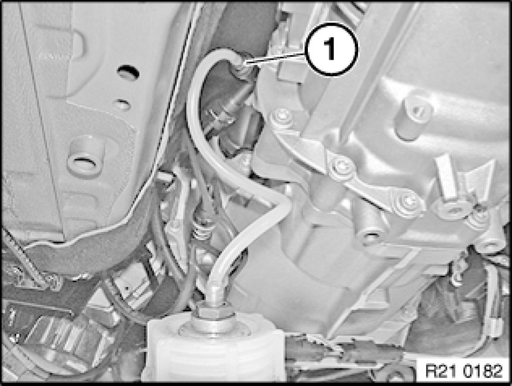

Clutch Fluid: Service and Repair
21 00 006 - Bleeding clutch hydraulics (plastic slave cylinder)

Necessary preliminary tasks:
- Remove underbody protection from transmission.

Connect bleeder unit to brake fluid expansion tank.
Important!
Check relevant Operating Instructions for each device.
Charging pressure should not exceed 2 bar.

Connect bleeder hose to bleed valve (1).
Open bleed valve (1) and flush until clear brake fluid emerges without air bubbles.
Close bleed valve.
Switch off bleeder unit or remove from brake fluid expansion tank.
Correct brake fluid level in expansion tank.